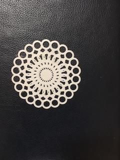
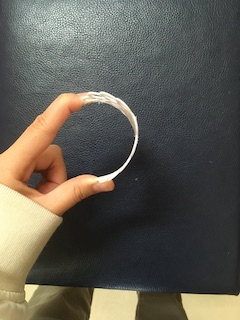
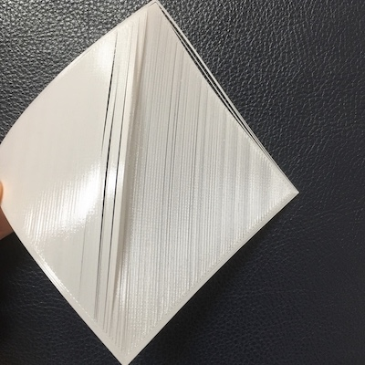
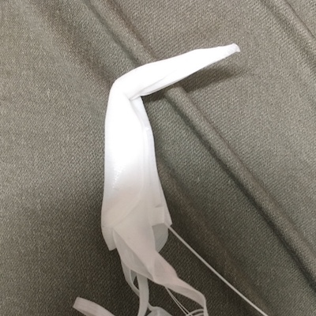
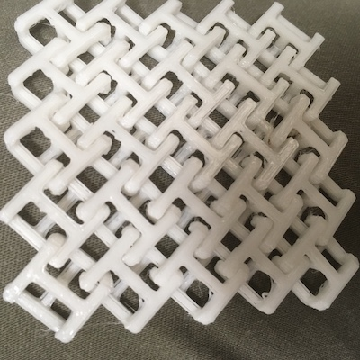
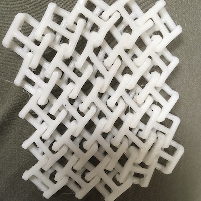
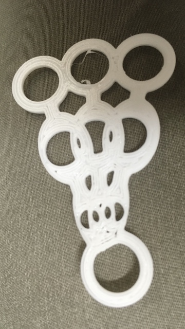
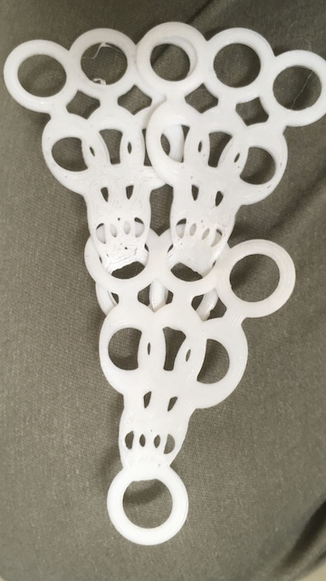
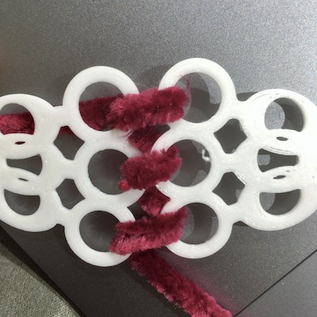

・今無料で期間限定試せるそうなので、よかったらhere
・ジェネレーティブのチュートリアル多数here
コードでモデリングできる！FUSIONとは違うやり方で３Dデータが作れる。here
現在動画学習中（12/23現在Lesson8まで終了）
・TRF（感温フィラメント）
人肌より少し暖かくすると変形できる。ある程度変形させても元の形に戻る。折れにくい。薄く出してるからなのか、マットな質感。色は白のみ。
・TPU（柔らかいフィラメント）
造形後も柔軟性がある
・アクリル板
高温で温めれば曲がる。艶がある。切り方次第では曲げれる構造。硬いからすぐ折れる。
・PLA（普通のいつものフィラメント ）
構造次第で、動きが出せる。艶があって綺麗。硬いからすぐ折れる。
レース柄の出力チャレンジ！作り方はFUSIONの“円形上パターン”で一周するとレース柄に見える。

このような大きさで出力。実際のTRFで出力したものが下の写真。


薄くて、よくしなり、折れません。薄いので両面をあぶるとすぐ柔らかくなります。ある程度厚みがあるので安定しています。
１ミリがベストな厚さだ（１層0.2ミリ？）。すかすかすぎなくて良い。
ひっぱても強そうな構造なので今回の服作りで使っていきたい。
１：適当な図形を描きます（大きさは欲しいものの半径）
２：作成→パターン→円形上パターン
３：円形オリジナルレースの完成参考データ下側の履歴を見るとわかりやすいです。
折紙の要領で何か服に応用できないかと思い、実験しました。

このような大きさで出力。実際のTRFで出力したものが下の写真。


薄すぎて少し出力失敗でペラペラです。成功したところだけで折鶴の頭を作ってみたら成功しました。
何もしない状態ではペラペラですが、温めた後はしっかり形が固定される。厚さの調整次第では今後使える方法だろう。
なぜレースはうまく出力できたのに、こっちは失敗したのだろう？
格子状のものをTRFで出すとどうなるのかの実験。

このような大きさで出力。実際のTRFで出力したものが下の写真。データはここから
テスト出力

ひっぱても、折っても、温まっていて、柔らかいのと、構造上柔軟性があることから、あまり壊れない。
左の写真がごちゃごちゃに遊んでみた後の画像。
また面白いことに、ストーブくらいの温度でゆっくり温めていると、徐々に出した時の形に戻ってくる。
テーマ：編み物の要領でTRF
ポンチョの編み図をここから無料入手
この図を元に似たようなものを作るとしたら、いくつかのパターンのパーツを作ればいいことがわかった。
迷っている点は毛糸を靴紐のように使うか、100％TRFで作るか。
毛糸も一緒に作ったら、本当に冬に活躍する温かいものになるのではないか。
TRFだけなら夏用のものになるのかな？
２つ作るのもあり。どっちを先にやるか。

このようにいくつかのパーツをつなげつつ、作っていく予定。
それか糸でつなげていくか。
おしゃれな靴紐の結び方で、これにより色のバリエーションもでてファッション性が高まる？

時間が許す限り、TRFでパーツを出力していきたい。
完成パーツ数グラフ管理
またAパターン、Bパターンを同時進行で仕上げていきたい。
A.TRFでベスト
機械の制約のため、また一個出力するのに時間がかかるため、今週はパーツを揃えることに集中する。
B.アクリル板で服を
細かい模様のため出力時間はかかるが、こっちの方から順次完成させていく。
レーザーカッターは離れて作業ができないため